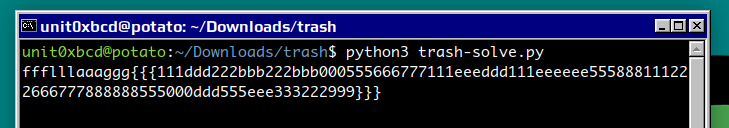

Trashcan is a forensics challenge from the Huntress CTF 2025. We are provided with an archive full of files from a Windows recycle bin.
Have you ever done forensics on the Recycle Bin? It's... a bit of a mess. Looks like the threat actor pulled some tricks to hide data here though.The metadata might not be what it should be. Can you find a flag?
The files come as matching pairs - a metadata file prefixed with
$I and the deleted file itself prefixed with
$R. The deleted files are all the same - a plain text file
with 'When did I throw this out!?!?' as the
contents.
$IZ3RIQE.txt
$RZ3RIQE.txt
cat \$RZ3RIQE.txt
When did I throw this out!?!?
Pair of matching files + file content
Looking at the $I file, it contains some kind of header
information followed by the full path the matching $R file
was deleted from.
unit0xbcd@potato:~/Downloads/trash$ xxd '$IZ3RIQE.txt'
00000000: 0200 0000 0000 0000 3700 0000 0000 0000 ........7.......
00000010: 0037 8725 5d08 2f00 1e00 0000 4300 3a00 .7.%]./.....C.:.
00000020: 5c00 5500 7300 6500 7200 7300 5c00 6600 \.U.s.e.r.s.\.f.
00000030: 6c00 6100 6700 5c00 4400 6500 7300 6b00 l.a.g.\.D.e.s.k.
00000040: 7400 6f00 7000 5c00 6600 6c00 6100 6700 t.o.p.\.f.l.a.g.
00000050: 2e00 7400 7800 7400 0000 ..t.x.t...As a next step I did some reading on the Windows recycle bin structure. By examining the stucture I determined that the challenge files followed the Windows 10 structure for byte layout according to this reference.
| Offset | Size | Description |
|---|---|---|
| 0 | 8 | Header |
| 8 | 8 | File Size |
| 16 | 8 | Deleted Timestamp |
| 24 | 4 | File Name Length |
| 28 | var | File Name |
There was something odd about the second set of bytes, representing file size. Instead of a value that could represent the 30 byte size of the deleted text, there was a representation of a single ascii character. I had found a probable flag - but clearly out of order.
./$I1D6OCR.txt
00000000: 0200 0000 0000 0000 6c00 0000 0000 0000 ........l.......
./$I4VJ9VP.txt
00000000: 0200 0000 0000 0000 3200 0000 0000 0000 ........2.......
./$IQQAA2F.txt
00000000: 0200 0000 0000 0000 6400 0000 0000 0000 ........d.......
./$IMZ20SR.txt
00000000: 0200 0000 0000 0000 6500 0000 0000 0000 ........e.......
./$IFUV73N.txt
00000000: 0200 0000 0000 0000 3600 0000 0000 0000 ........6.......
./$I5RPN3M.txt
00000000: 0200 0000 0000 0000 3300 0000 0000 0000 ........3.......
./$ING16RB.txt
00000000: 0200 0000 0000 0000 3200 0000 0000 0000 ........2.......
./$ITB15DJ.txt
00000000: 0200 0000 0000 0000 7d00 0000 0000 0000 ........}.......
<snip>I now needed to determine how to reorder them. I took the cleartext message from the deleted file as a hint. Instead of lexicographic or dictionary order, I used the deletion time recorded at 0x10, an offset of 16 bytes. This part required more research as I have never worked with Windows FILETIME in Python before.
In computer operating systems, time is stored as a single whole number that represents the time elapsed since a chosen starting point known as the epoch. This allows for simple arithmetic operations for comparing, adding, and subtracting time as well as making representations of time fit easily into a 32 or 64 bit integer. In UNIX, time is represented as the number of seconds since the first of January 1970. Windows it turns out, uses a count of each 100 nanoseconds since the first of January 1601. Because, of course it does?
I built a python script to solve by reading in the header
information, converting the Windows FILETIME to an int understandable by
python's datetime module and building up a list of
dictionaries with the flag character and the deletion time. Once the
loop was complete, the list is then sorted by the deletion time.
This resulted in quite a bit too much flag - removing the duplicates gave us exactly the right amount of flag.

#!/usr/bin/env python3
from struct import unpack
from datetime import datetime, timedelta
from sys import argv
from os import listdir
from re import sub
library = []
# open all the files Iwant - just the metadata $I files
trashfiles = [el for el in listdir('.') if el.startswith('$I')]
for entry in trashfiles:
with open(entry, "rb") as file:
# grab header whole - avoid repeated seeks
header = file.read(24)
# flag character position - first two bytes of file size field
char = header[8:10].decode('utf-16le')
# deletion time
bytetime = header[16:24]
inttime = unpack('<Q', bytetime)[0]
filetime = datetime(1601,1,1)+timedelta(seconds=inttime/1e7)
# chuck into the library
library.append({'char': char, 'filetime': filetime})
# sort by our deletion time
library.sort(key=lambda x: x['filetime'])Converting the FILETIME to Python's datetime is not strictly necessary - I could have stopped at converting the bytes representation into a standard python integer and then sorted smallest to largest. Calculating the FILETIME was an iterative step I used to test my reasoning since the output is human readable.
Thanks to thismanera on Medium for a very concise and accurate explanation of the structure of recycle bin metadata files.